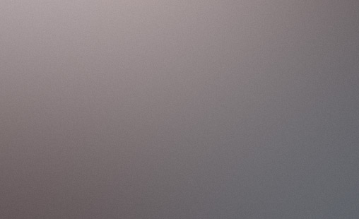

Profile Summary
Junior data scientist with 2+ years of experience in project work and freelance jobs. On a mission to create an A.I Driven ecosystem in India.

Junior data scientist with 2+ years of experience in project work and freelance jobs. On a mission to create an A.I Driven ecosystem in India.
Designed and developed a Deep learning model that can detect COVID-19 using Chest X-ray by implementing transfer learning (VGG-16).
Social-distancing is an important way to slow down the spread of infectious diseases. People are asked to limit their interactions with each other. In this project we will combine deep learning and computer vision to monitor social distancing.
Twitter’s 139 million daily active users interact with brands on the network in important ways, from retweeting your content to a broader audience to making purchases that directly impact your bottom line. If you’re not using Twitter analytics, you’re missing out on key Twitter insights that could help you refine your strategy and maximize ROI.

A recommendation engine is a system that suggests products, services, information to users based on analysis of data. The main objective of this project is to provide most appropriate Anime recommendations to the users using content based filtering.

Donec eget ex magna. Interdum et malesuada fames ac ante ipsum primis in faucibus. Pellentesque venenatis dolor imperdiet dolor mattis sagittis magna etiam.

Donec eget ex magna. Interdum et malesuada fames ac ante ipsum primis in faucibus. Pellentesque venenatis dolor imperdiet dolor mattis sagittis magna etiam.